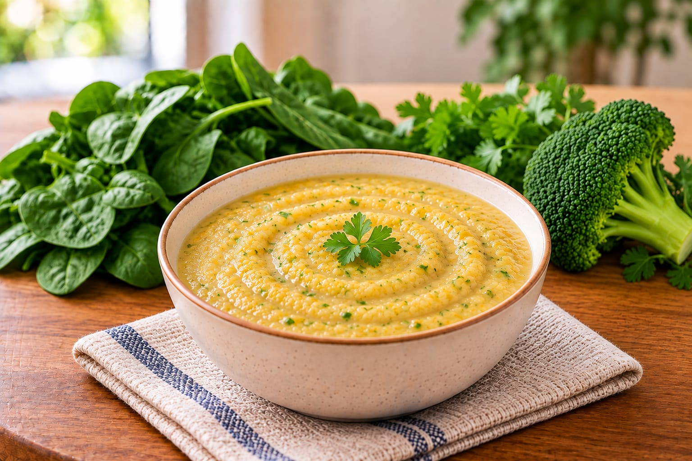

Home / Nutrition solutions / Semi-solid feeds
Semi-solid feeds
Thicker, semi-solid feeds for tube feeding.

Who this feed is for
Semi-solid feeds are a thicker option for patients who are fed through a tube.
Feed selection is based on the patient's clinical and nutritional needs. A dietitian confirms the right feed.
How we help
- 1
Share the reports
Send the patient's medical reports. Add a dietitian prescription if you have one.
- 2
A dietitian plans the feed
The plan is built around the patient's needs and feeding route.
- 3
We prepare and deliver
Feeds are made in our Nutrition Lab and delivered to your home or hospital.
Ask a dietitian about semi-solid feeds
Share the patient's details and our team will contact you.